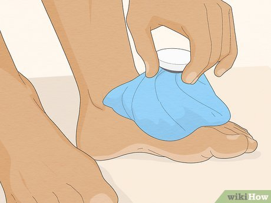
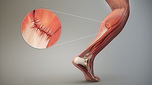

ثالثا : ضع كمادات التلج علي مكان التقلص لمده من ١٠ الي ٢٠ د

رابعا : تدليك البسيط
خامسا : تناول عصيرآ او مشروبآ يرخي العضلات
سادسا : حرص علي ممارسه تمارين الاطاله الخفيفه التي تساعد علي تحسين نطاق الحركه
ماهو الشد والتمزق العضلي؟
هو شد أو نزيف الألياف العضلية، أو الأوتار ، أو كيس المغلف للعضلة نتيجه جهد عضلي شديد وعنيف ومفاجئ بدرجة أكبر من قدرة العضلة على تحمل هذا الجهد

ماهو الأعراض الشد والتمزق العضلي؟
تورم في المنطقه المصابه
يكون الألم شديد كالشعور بقطع سكينة
في حالة التمزق الشديد من الممكن سماع صوت فرقعة في العضلة
عدم قدرة العضلات المصابة على أداء وظيفتها
يحدث ورم مكان الإصابة
في حالة التمزق الكامل يمكن رؤية فجوة مكان الإصابة انخفاض في مستوى الجلد
ماهو الاسعافات لحاله الشد والتمزق العضلي؟
:RICE استخدم بروتوكول
(R)Rest
الراحة: استرح قليلا واهدا والتوقف عن استخدام عضلات المصابه لهذه ايام -
(I)ICE
التلج : ضع كمادات التلج لمده ١٠ الي ٢٠ د لتخفيف الالم والتورم ويتم التكرر ٣ مرات في اليوم ولا يتم وضع الكمادات فوق الجلد مباشرا ، ويوضع كمادات دافئه علي المنطقه المصابه بعد ثلاثه ايام من الاصابه لتنشيط الدوره الدمويه في المنطقه المصابه وشفائها بسرعه
(C)Compression
الضغط: الربط برباط ضاغط قبلها استخدام الأشرطة اللاصقة بشكل عكسي أو طولي مع القطع من أسفل إلى أعلى. بهدف تقليل التورم ، مع تجنب لف الصامد -
(E)Elevation
الرفع: رفع الجزء المصاب فوق مستوي القلب للمساعده علي تقليل التورم استعمال مرهم للكدمات ( ريباريل جل - هيموكلار- اكستروما ) -